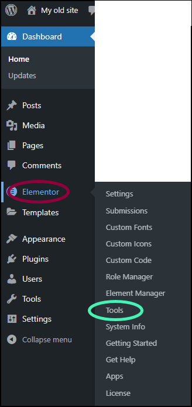
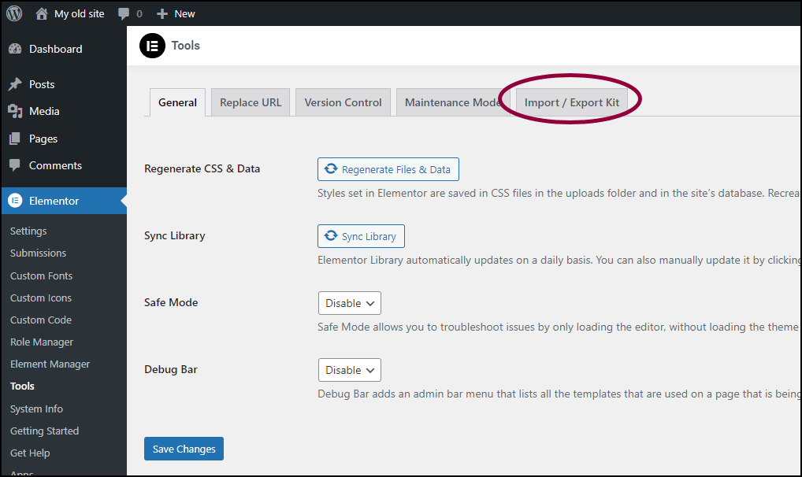
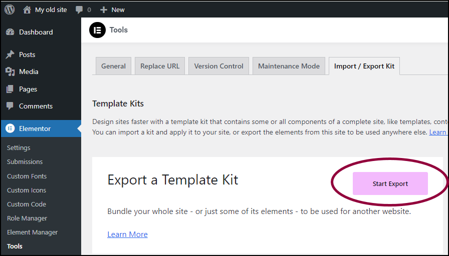
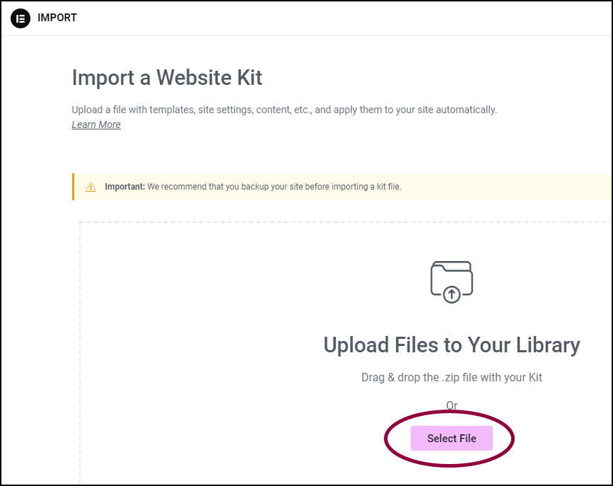
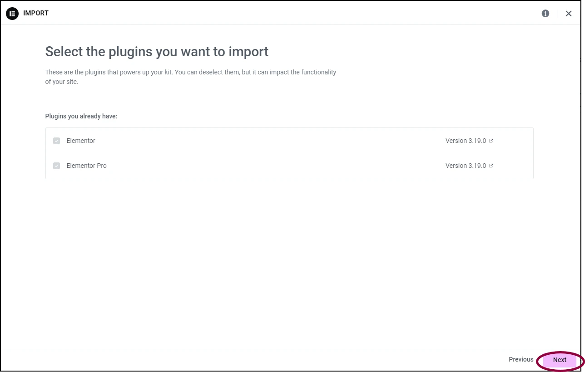

Welcome
We're excited to have you join the Furnice family! Your purchase means a lot to us, and we can't wait to see how you use it to create stunning websites. To help you get started, we've included a step by step how can you import your template into your existing website, that might be helpful.
Important! Elementor recommends backing up your site before importing a kit file.
How to Import
-
Extract Package
Once you extract the purchased package, you'll find three files: the Main File, this Documentation, and Screenshots of each page in the template.
- Go to your WP Admin
- Select Elementor > Tools
- In the right panel, click the Import/Export Kit tab
- Click Start Import
- Drag and drop the exported zip file into the window or click Select File and navigate to the zip file. You may receive a warning about importing zip files. If you created the zip file or trust the source of the zip file, continue with the import.
- Click Next
-
Select which parts of the kit you want to import
- Templates: imports site parts such as headers and footers plus any template you saved. Only select this if you want to recreate the site elements with different content.
- Content: Imports the pages, posts, and custom post types. It is good for importing the text and images in the kit.
- Site Settings: Import the global fonts, theme style, layout, lightbox, and background settings. Only select this if you want to replicate the look and feel of the site.
Tip: If you want to import the entire site as is, select all three. -
Click Import
You may receive a warning that the kit contains SVG files. If you created the export kit or trust the source of the export kit, Enable SVG imports.
- Click Close to end the import process





Customize the Font and Color
- Open one of the Imported page with Edit with Elementor option
- Navigate to the upper left of the panel and select Site Settings
- Choose what do you want to customize, the Global Colors or Global Fonts
- After that, change the color or font according to your style
- Don’t forget to save your settings with click the Save Changes button in the bottom left